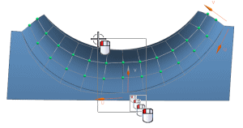
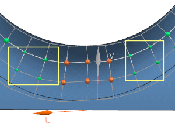

Isolate the proportional movement of poles in the U-direction
You can isolate which poles are allowed to move when doing a proportional move. You specify a range of poles based on U and V directions that will move proportionally.
-
In the Method group, set the following:
-
Move tab = Normal
-
Advanced Method = Proportional
-
Pole Control =
 By U/V
By U/V -
Before U = 2
-
After U = 2
-
-
In the Pole Selection subgroup, with Select Object highlighted, select interior poles as shown.

Notice that the poles that may be affected by the proportional move, are displayed as smaller spheres, in the Before U and After U configuration you specified.

-
In the Microposition group, with Step Value set to 10, click the negative option twice.
-
In the Settings group, click Restore Parent Face
 .
.